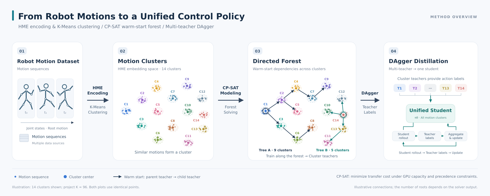

PNDbotics
Reinforcement Learning for Motion Control
Whole-body teleoperation and motion retargeting, general-purpose motion tracking, Transformer architecture improvements, and GPU training optimization.

Whole-Body Teleoperation and Motion Retargeting
To make a humanoid robot follow a human operator, I used the Mink inverse kinematics toolkit to convert human skeletal motion captured by VR devices into whole-body joint targets. This process, called motion retargeting, accounts for differences in body proportions and joint structures between humans and robots. Inverse kinematics (IK) computes joint configurations from target positions and orientations. I also resolved ordering and timing issues in asynchronous ROS 2 message processing and improved offline data collection, human-body calibration, and preprocessing tools for Pico devices.
General-Purpose Whole-Body RL Motion Tracking
To train a single control model to track diverse reference motions, I built a whole-body motion tracking pipeline with mjlab. Following Humanoid-GPT, I represented motions using Harmonic Motion Embedding (HME), grouped similar motions with K-Means, and trained a PPO expert policy for each motion cluster. I then used DAgger (Dataset Aggregation) to query the corresponding experts at states visited by the student policy and aggregate their supervision, distilling the experts into a unified motion tracking policy.
After observing that parameter transfer between similar motion clusters could accelerate convergence, I used trained models to warm-start nearby clusters. I formulated the joint selection of training order and initialization sources with CP-SAT to minimize HME transfer distances between clusters, subject to the theoretical minimum number of training batches.
Parameter Reuse and Multi-GPU Scheduling for PPO Experts
Each motion cluster contains similar motions, and its expert policy specializes in tracking them. The original pipeline trained every expert from scratch with PPO (Proximal Policy Optimization, a reinforcement learning algorithm). I explored warm starts: initializing new experts with parameters from previously trained models. In comparative experiments with the same number of training iterations, initialization from clusters closer in HME space generally achieved higher tracking success rates.
Parameter reuse also requires coordinating the training order. A model can only reuse parameters from completed models, while waiting for dependencies can leave GPUs idle. I formulated this as parallel task scheduling with dependency constraints. With the minimum number of training batches fixed, a CP-SAT constraint optimization solver jointly selects the first batch, each task's execution batch, and its initialization source, favoring sources that are close in HME space.
Problem Analysis and Modeling Details
1. Jointly Consider Parameter Reuse and GPU Parallelism
Choosing the nearest model for every task independently can produce an infeasible schedule: the source model may not have finished training, or two tasks may wait on each other. Initialization sources and execution order must therefore be planned together. A successfully trained model can initialize any number of tasks that start later; they do not need to run on the same GPU.
2. Fix the Batch Count, Then Optimize Initialization Sources
The model approximates expert training times as equal and uses synchronous batches: each batch finishes before the next begins. For N motion clusters and G GPUs, at most G tasks fit in each batch, requiring at least T = ⌈N / G⌉ batches. With 96 clusters and 8 GPUs, this gives 12 batches of 8 training tasks.
Once the batch count is fixed, the HME distance between an initialization source and a target cluster serves as a proxy for transfer difficulty. Minimizing the sum of these distances jointly optimizes which models train first, when they become available for reuse, and where later models obtain their initial parameters.
3. Solve Batch Assignments and Dependencies with CP-SAT
For each motion cluster i, an integer variable wi specifies its execution batch. A Boolean variable xij indicates whether task j is initialized from task i, and Dij is their HME distance. Tasks in the first batch train from scratch; every other task must select one completed model as its initialization source, or parent in the dependency graph. The solver also chooses which clusters enter the first batch.
Capacity constraints limit the number of tasks in each batch. Dependency constraints require initialization sources to finish in an earlier batch, ruling out circular waits. CP-SAT jointly searches over the first batch, execution batches, and dependencies, avoiding initialization choices that would prevent full GPU utilization.
4. Replan Remaining Tasks After Training Failures
The initial schedule assumes every completed task yields a usable model. If a model is discarded for poor performance, tasks that depend on it must be replanned. Tasks are partitioned into successful models S, discarded models D, and untrained tasks U. Models in S remain available, models in D are excluded, and tasks in U may initialize from S or from other tasks that finish earlier in the new schedule.
After each batch, if R tasks remain, the scheduler uses K = ⌈R / G⌉ as the upper bound on the remaining batch count and solves the assignments and dependencies again. Successful models no longer occupy GPU slots in subsequent batches and can directly initialize new tasks, preserving the value of completed training.
Transformer Policy Architecture Improvements
To jointly model the robot's state history and future motion targets, I redesigned the architecture as a two-stream temporal Actor–Critic. Robot observation history and reference motion are embedded separately, one token per frame. Causal self-attention models the state history, while cross-attention reads the target motion sequence. The history window contains 10 past frames and the current frame; the reference motion window contains 10 past target frames, the current target frame, and 10 future target frames, providing both temporal context and upcoming targets.
Two sequential Fusion Blocks combine the streams. The first updates all 11 history tokens; the second computes queries and subsequent outputs only for the current token, omitting final-stage computations that do not contribute to the output head. It still reads the full keys and values (K/V) from the 11-frame history and 21-frame reference motion, limiting computational overhead while using a longer temporal context.
Inputs, Attention-Based Fusion, and Removal of Unused Computation
Preserve Temporal Information Frame by Frame
The robot observation input is 11 × 93 for the Actor and 11 × 219 for the Critic; both use a 21 × 67 reference motion input (frames × features per frame). Reference motion specifies the target movement to track, including future targets, rather than control actions previously executed by the robot. Each stream is mapped to one token per frame, without temporal pooling.
Model State History Before Reading Reference Motion
Each Fusion Block contains causal self-attention, cross-attention, and a feed-forward network (FFN), with residual connections. Cross-attention queries (Q) come from history tokens updated by self-attention, while K/V come from reference motion tokens. Rotary positional embeddings (RoPE) are applied to Q and K. Both blocks receive the same reference motion embeddings, but have separate normalization and projection parameters.
Remove Only Computations Unused by the Output Head
Fusion Block 1 retains outputs for all history tokens. Fusion Block 2 computes self-attention queries, cross-attention queries, and FFN outputs only for the current token. In both blocks, self-attention still reads all history K/V and cross-attention reads all reference motion K/V, so neither accessible window is shortened.
Training Performance Optimization: Fused RoPE and Short-Sequence Attention
Using PyTorch Profiler, I identified two sources of GPU overhead during PPO training of the two-stream temporal Transformer: intermediate tensor reads and writes in the multi-step RoPE implementation, and general-purpose attention kernels poorly suited to the model's short sequences. I developed fused RoPE and specialized attention forward and backward kernels in Triton, matching the original backend's key floating-point operation order to address numerical differences that were amplified during full training updates.
In benchmarks using actual environment rollouts on an RTX PRO 6000 Blackwell, with the model architecture, precision settings, and PPO configuration unchanged, PPO update time fell from 3.2139 s to 1.6718 s (48.0% lower), while combined rollout collection and update time fell from 4.5597 s to 2.9826 s (34.6% lower), yielding approximately 1.53× iteration throughput. These measurements exclude log writes, periodic evaluation, checkpoint saving, and state resets.
Performance Bottlenecks, Kernel Implementation, and Numerical Validation
Fuse RoPE to Reduce Intermediate GPU Memory Access
I fused feature pairing, sine/cosine multiplication, and rotation arithmetic into a Triton kernel, implemented a fused backward pass, and integrated both into the existing training pipeline through a custom torch.autograd.Function. Preserving the original FP32 operation order reduced repeated writes and reads of intermediate results. In an independent ablation, caching sine/cosine tables alone improved performance by only about 0.12%; kernel fusion provided the main speedup.
Tailor Attention Forward and Backward Passes to the Actual Short Sequences
The attention shapes across the two Fusion Blocks are 11×11, 11×21, 1×11, and 1×21, with a head dimension of 32. I used smaller tiles suited to these shapes and implemented Q/K/V gradients with support for the actual tensor layouts. In profiler comparisons using the same actual PPO minibatch, the total time of the main attention forward and backward kernels fell from 46.850 ms to 13.244 ms.
Go Beyond Mathematical Equivalence to Numerical Agreement During Training
The initial kernels were faster, but small local differences were amplified by subsequent TF32 linear layers, causing AdamW state validation to fail. I examined the original backend's FastF32 path and matched operand splitting and rounding, the sequence of three TF32 matrix multiply-accumulate operations, segmented reductions, and key operation ordering in the softmax forward and backward passes. The final implementation passed validation of complete training updates within the predefined error tolerances.
Validate with Actual Rollouts and a Complete PPO Update
Using 2048 environments, 24 rollout steps, and 5 epochs × 4 minibatches, I compared the baseline and optimized implementation from identical model and optimizer states on the same collected on-policy data. In the tested cases, the recorded maximum absolute differences were zero for full-model outputs and gradients, as well as 4 loss values, 129 parameters, and 387 AdamW state tensors after 20 optimizer steps. Adaptive learning-rate decisions also matched. An additional 48 tests covering tensor layouts, partial gradient computation, and repeated runs passed.
The performance results are steady-state measurements after warmup; the 20 optimizer steps above constitute one complete PPO update. Validation is limited to the tested hardware, FP32 with the original TF32 settings, and the specified short-sequence shapes. It does not establish identical long-term training trajectories or final convergence.